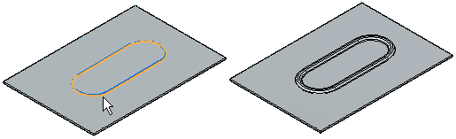
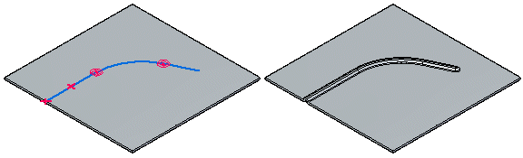
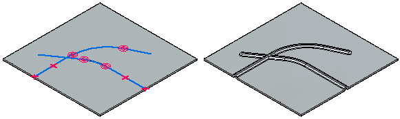
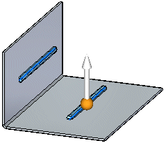
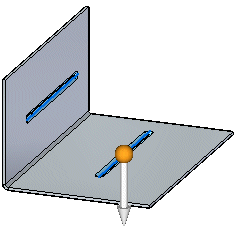
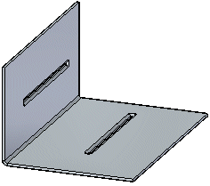

Constructing beads
You can construct a bead with an open sketch element,

or closed sketch region.

When constructing a bead profile using multiple elements, the element must be a continuous set of tangent elements.

You can also construct a bead feature using multiple, separate sketch elements. Each element must be a continuous set of tangent elements, but the profiles can cross each other.

You can select more than one sketch element to construct multiple beads in a single operation.

You can use the direction arrow to change the direction of the beads.

All disjoint beads created in a single operation offset to the same side.

When constructing multiple disjoint beads, an entry in PathFinder, a feature profile, and a nail is created for each disjoint bead. Beads cannot be flattened and they cannot cross a bend.
You can specify the shape of the bead cross section and the type of end condition treatment you want using the Bead Options dialog box. For example, you can specify whether the bead shape is circular, U-shaped, or V-shaped. You can also specify whether the ends of the bead are formed, lanced, or punched.
How do I
Construct a beadMove or edit a bead
Look up more details
Bead commandBead command bar
Bead Options dialog box
Bead command bar